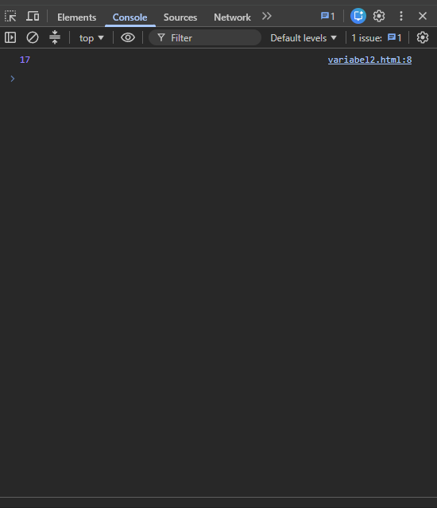
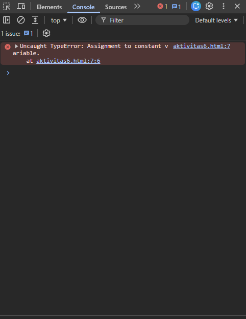
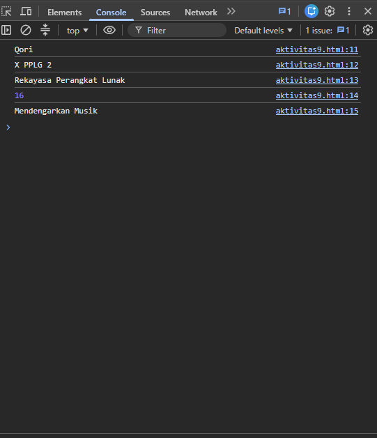
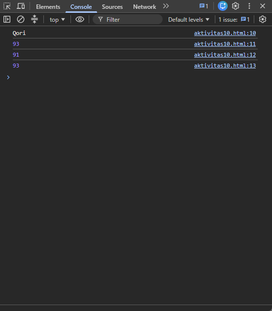
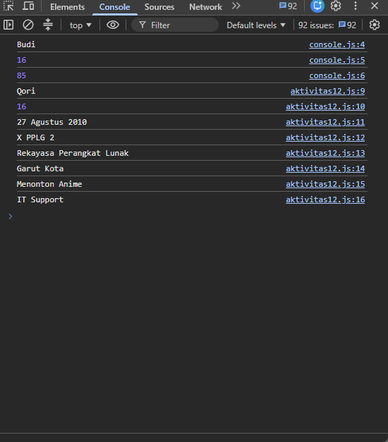

Identitas Pembelajaran
Mata pelajaran: Dasar-Dasar Pengembangan Perangkat Lunak dan Gim · Metode: eksplorasi, praktik, diskusi, tanya jawab, refleksi.
Tujuan Pembelajaran
Setelah menyelesaikan LKPD, peserta didik diharapkan mampu:
- Menjelaskan pengertian dan fungsi variable dengan bahasa sendiri.
- Membedakan
letdanconstsecara sederhana. - Membuat variable JavaScript dan menamai variable sesuai aturan.
- Menyimpan data teks dan angka, lalu menampilkan nilainya dengan
console.log(). - Membuat program sederhana serta menemukan dan memperbaiki kesalahan penggunaan variable.
Petunjuk keselamatan dan kerja
- Gunakan komputer/laptop dengan hati-hati dan simpan pekerjaan secara berkala.
- Jangan menghapus file milik teman atau menyalin kode tanpa memahami fungsinya.
- Jika muncul error, baca pesan error dan diskusikan penyebabnya.
- Setiap anggota kelompok harus memahami hasil pekerjaan kelompok.
A. Apersepsi
Bayangkan kamu sedang membuat aplikasi data siswa. Program perlu menyimpan nama siswa, kelas, umur, nilai, dan jurusan.
let nama = "Budi"; let kelas = "XI RPL 1"; let umur = 16; let nilai = 85;
B. Aktivitas 1–3: Mengenal Variable
Aktivitas 1 — Mengamati
Perhatikan kode berikut, lalu jalankan menggunakan browser. Buka Developer Tools melalui klik kanan → Inspect → Console.
let nama = "Budi"; let umur = 16; let nilai = 85; console.log(nama); console.log(umur); console.log(nilai);

Aktivitas 2 — Apa itu variable?
Variable dapat dianggap sebagai tempat untuk menyimpan sebuah data agar data tersebut dapat digunakan kembali oleh program.
let nama = "Andi";
| Bagian | Fungsi |
|---|---|
let | Membuat variable |
nama | Nama variable |
= | Memberikan nilai |
"Andi" | Nilai yang disimpan |
Aktivitas 3 — Praktik membuat variable
Buat file bernama variable.html, masukkan kode berikut, lalu buka file di browser dan periksa Console.
<!DOCTYPE html> <html> <head><title>Belajar Variable</title></head> <body> <script> let nama = "Budi"; let kelas = "XI RPL 1"; let umur = 16; console.log(nama); console.log(kelas); console.log(umur); </script> </body> </html>

C. Aktivitas 4–6: Mengubah Data dan Jenis Variable
Aktivitas 4 — Eksperimen
Ubah nama, kelas, dan umur pada program sebelumnya sesuai data kamu.

Aktivitas 5 — Berbagai jenis data
Identifikasi jenis data dari setiap variable.
| Variable | Nilai | Jenis data |
|---|---|---|
| nama | "Andi" | |
| umur | 17 | |
| tinggi | 170 | |
| aktif | true |
Aktivitas 6 — Mengenal let dan const
let umur = 16; umur = 17; console.log(umur);

const nama = "Budi"; nama = "Andi"; console.log(nama);

| Keyword | Nilai dapat diubah? | Kegunaan sederhana |
|---|---|---|
| let | ||
| const |
let untuk data yang masih mungkin berubah. Gunakan const untuk data yang tidak perlu diubah.D. Aktivitas 7–8: Nama Variable yang Benar
Contoh nama yang diperbolehkan: nama, namaSiswa, nama_siswa, nilai1.
Contoh yang tidak diperbolehkan: 1nama, nama siswa, nama-siswa. JavaScript membedakan huruf besar dan kecil.
| No. | Nama variable | Benar / Salah |
|---|---|---|
| 1 | nama | |
| 2 | namaSiswa | |
| 3 | nama_siswa | |
| 4 | 2nama | |
| 5 | nama siswa | |
| 6 | nilaiAkhir | |
| 7 | nilai1 | |
| 8 | nilai-akhir | |
| 9 | Alamat | |
| 10 | alamatSiswa |
Perbaiki nama variable yang salah
E. Aktivitas 9–10: Tantangan Data
Aktivitas 9 — Tantangan data diri
Buat minimal 5 variable untuk menyimpan nama, kelas, jurusan, umur, dan hobi. Tampilkan semua data menggunakan console.log().

Aktivitas 10 — Tantangan level 2
Buat program data siswa yang menyimpan nama siswa, nilai Bahasa Indonesia, nilai Matematika, dan nilai Produktif.
let nama = "Andi"; let bahasaIndonesia = 80; let matematika = 85; let produktif = 90; console.log(nama); console.log(bahasaIndonesia); console.log(matematika); console.log(produktif);

F. Aktivitas 11–12: Debugging dan Challenge
Aktivitas 11 — Debugging
Program berikut memiliki beberapa kesalahan. Temukan kesalahannya dan tulis program yang sudah diperbaiki.
let nama siswa = "Budi"; let umur = 16; let 2kelas = "XI RPL"; console.log(nama siswa); console.log(umur); console.log(2kelas);
Aktivitas 12 — Challenge “Profil Siswa”
Buat program yang menyimpan nama, kelas, jurusan, umur, kota, hobi, dan cita-cita. Tampilkan semuanya menggunakan console.log(), lalu tambahkan minimal 2 variable baru.

G. Aktivitas 13 dan Refleksi
Think Pair Share
Refleksi pemahaman
Pilih tingkat pemahamanmu pada setiap pernyataan.
| Pernyataan | Belum paham | Mulai paham | Paham |
|---|---|---|---|
| Saya memahami pengertian variable | |||
| Saya dapat membuat variable dengan let | |||
| Saya memahami penggunaan const | |||
| Saya dapat menyimpan data ke dalam variable | |||
| Saya dapat menampilkan variable dengan console.log() | |||
| Saya dapat memberikan nama variable dengan benar | |||
| Saya dapat menemukan kesalahan variable |
Refleksi 3–2–1
Kesimpulan
H. Tugas: Data Produk Sederhana
Buat program bertema “Data Produk Sederhana” dengan minimal 6 variable: nama produk, kategori, harga, stok, merek, dan status produk.
const namaProduk = "Keyboard"; const kategori = "Perangkat Komputer"; const harga = 150000; let stok = 10; const merek = "ABC"; const tersedia = true; console.log(namaProduk); console.log(kategori); console.log(harga); console.log(stok); console.log(merek); console.log(tersedia);
Ketentuan
- Minimal 6 variable.
- Gunakan
letdanconst. - Gunakan nama variable yang benar.
- Gunakan data teks dan angka.
- Program dapat dijalankan tanpa error.
- Mampu menjelaskan fungsi setiap variable.

Exit ticket
I. Penilaian
Pengetahuan (maksimal 80 poin)
| Indikator | Skor |
|---|---|
| Menjelaskan pengertian variable | - |
| Menjelaskan fungsi variable | - |
| Membedakan let dan const | - |
| Menjelaskan aturan penamaan variable | - |
| Menjelaskan jenis data sederhana | - |
| Total | - |
Rubrik hasil program
| Kriteria | Bobot |
|---|---|
| Program dapat dijalankan | 20% |
| Penggunaan variable benar | 20% |
| Penamaan variable benar | 15% |
| Penggunaan let dan const tepat | 15% |
| Data yang digunakan sesuai | 10% |
| Output berhasil ditampilkan | 10% |
| Kerapian kode | 10% |
| Total | 100% |
Skala keterampilan dan sikap: 4 = Sangat Baik, 3 = Baik, 2 = Cukup, 1 = Perlu Bimbingan. Aspek keterampilan meliputi pembuatan variable, penamaan variable, penggunaan let/const, menampilkan data, ketepatan kode, dan debugging. Sikap meliputi kedisiplinan, kerja sama, tanggung jawab, keaktifan, dan ketelitian.